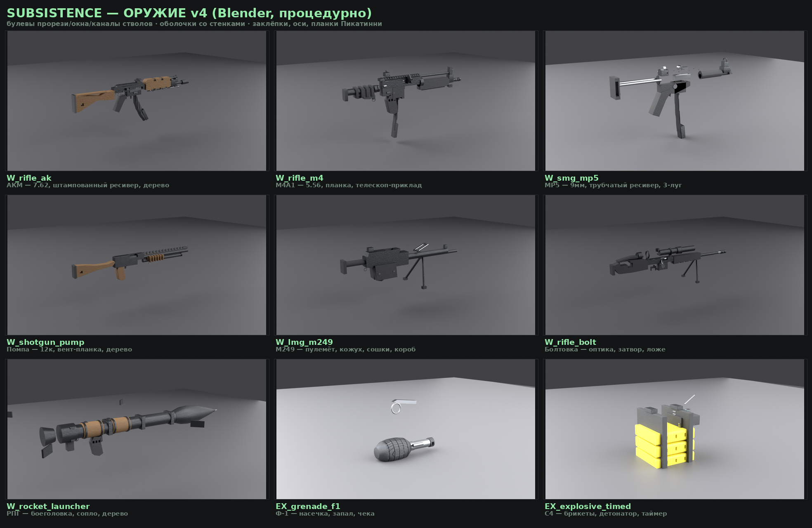
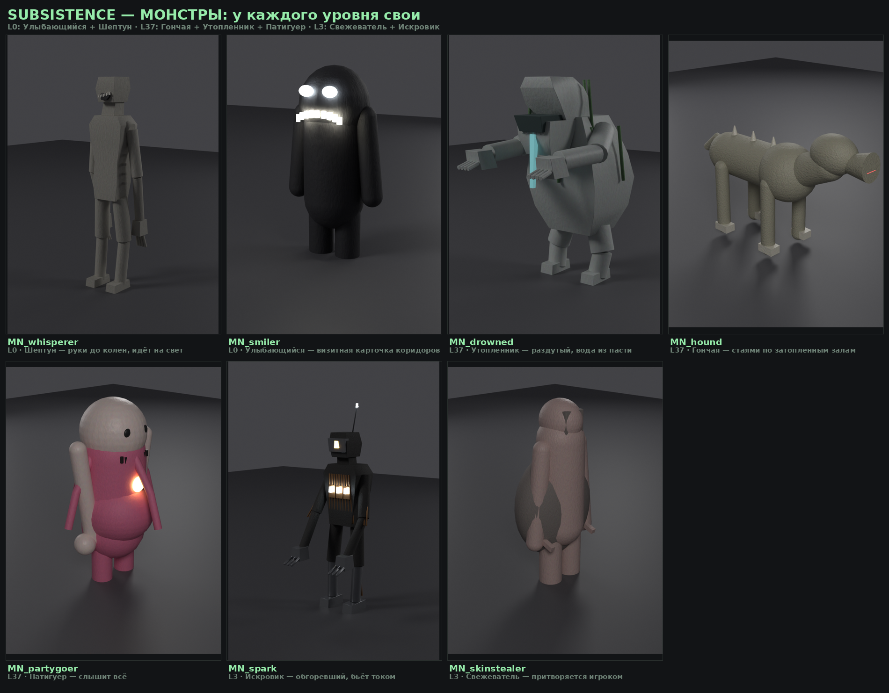
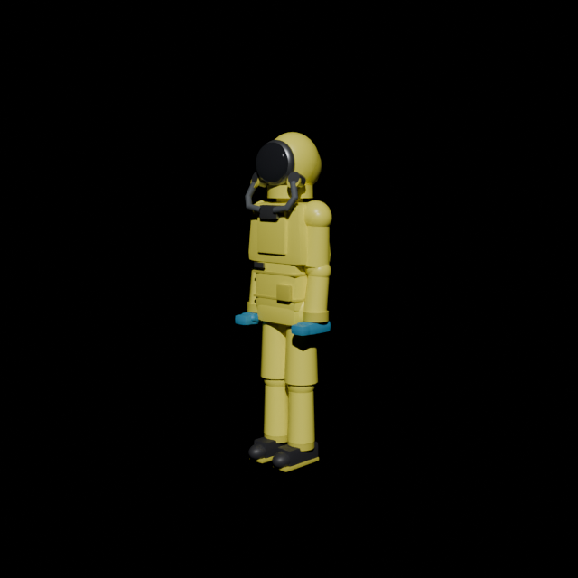

Архив Subsistence_1.0.0-alpha.zip (470 файлов) скачан с твоего гугл-диска и изучен целиком, Blender 5.0 уже работает в моей песочнице (проверено: импорт твоих FBX, замер полигонов, тестовый рендер — docs/previews/_render_sandbox_test.png). Проект переехал в git-репозиторий tras-bit/Sagu — теперь весь код, модели и доки под версионным контролем.
Замер полигоонов сегодня (Blender 5.0.1): АК ≈ 10.2k трис · Smiler ≈ 16.3k · хазмат ≈ 30.9k. Это средний поликаунт, до хай-поли пока не дотягивает — что и будем чинить.
• Кликай вариант (а/б/в/г) — или пиши свой текст в поле снизу вопроса.
• ✶ рекомендую — что я сделаю, если вопрос останется без ответа (промолчишь = соглашаешься).
• Прогресс сохраняется сам. В конце жми «ОТПРАВИТЬ ОТВЕТЫ ИИ» — ответы прилетят прямо мне в песочницу.
• Можно по-старинке: «1а 2б 3в…» прямо в чат — кнопка «Копировать кратко» соберёт такую строку за тебя.
Прошлые опросники (v1 — 57 вопросов, v2 — 22) уже вшиты в код — docs/ANSWERS.md и docs/ANSWERS_V2.md. Здесь только новое, что реально нужно мне для продолжения.

_sheet_weapons.png — 9 стволов (v4, 62 531 трис суммарно)
_sheet_monsters.png — монстры Backrooms
_render_sandbox_test.png — мой первый рендер в песочнице сегодня: CH_hazmat_suit, Cycles CPU, 5 сек